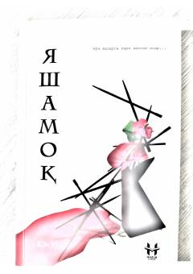

YXitoy adabiyotining ko'z yoshli romani — hayot va taqdirning ulug' qissasi.
"Yashamoq" — xitoylik yozuvchi Xua Yuyning mashhur romani bo'lib, o'zbek tiliga tarjima qilingan. Asar insonning hayot va o'lim, azob va umid bilan to'la taqdirini tasvirlaydi. 2024-yilda Huzur nashriyoti tomonidan chop etilgan.